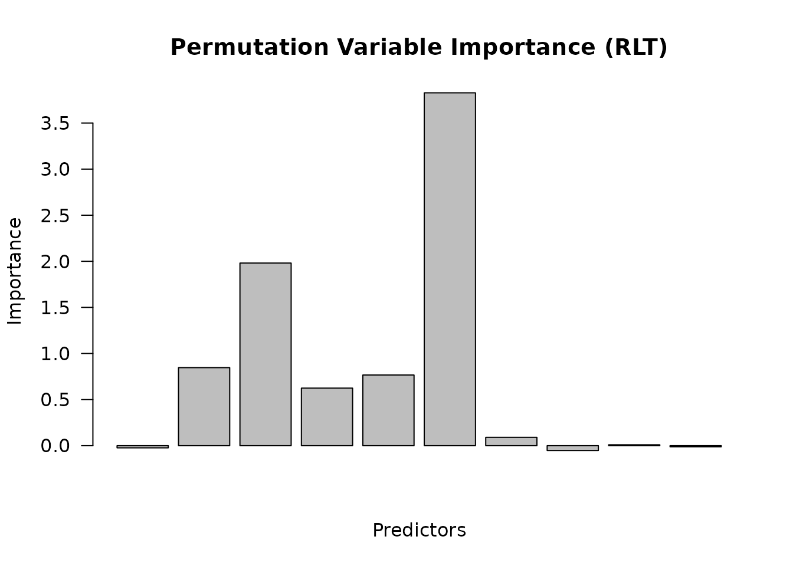

Variable Importance (Permutation and Distributed) - Tutorial (RLT)
Ruoqing Zhu
Last Updated: May 18, 2026
Source:vignettes/articles/variable-importance.Rmd
variable-importance.RmdData
We generate continuous and categorical predictors with a continuous outcome.
# (Optional) For reproducibility in this tutorial only.
set.seed(1)
# ---- Generate a small synthetic dataset ----
trainn <- 80
testn <- 20
n <- trainn + testn
p <- 10
# Continuous + categorical predictors (last half as factors)
X1 <- matrix(rnorm(n * (p/2)), n, p/2)
X2 <- matrix(as.integer(runif(n * (p/2)) * 3), n, p/2) # integers 0,1,2
# Continuous outcome with a simple signal + noise
X_numeric <- data.frame(X1, X2)
y <- 1 + rowSums(X_numeric[, 2:6]) +
2 * (X_numeric[, p/2 + 1] %in% c(1, 2)) + rnorm(n)
X <- X_numeric
X[, (p/2 + 1):p] <- lapply(X[, (p/2 + 1):p], as.factor)
# Train / test split
trainX <- X[1:trainn, ]
trainY <- y[1:trainn]
testX <- X[(trainn + 1):(trainn + testn), ]
testY <- y[(trainn + 1):(trainn + testn)]Option A - Permutation Importance
Set importance to enable permutation-based VI during
training.
# install.packages("devtools"); devtools::install_github("teazrq/RLT")
library(RLT)
# Minimal, sensible defaults
ntrees <- 200
ncores <- 1
nmin <- 5
mtry <- p/2
samplereplace <- TRUE
sampleprob <- 0.80
rule <- "best"
nsplit <- ifelse(rule == "best", 0, 3)
fit_perm <- RLT(
trainX, trainY, model = "regression",
ntrees = ntrees, mtry = mtry, nmin = nmin,
resample.prob = sampleprob, split.gen = rule,
resample.replace = samplereplace,
nsplit = nsplit,
importance = "permute", # permutation-based VI
ncores = ncores, verbose = FALSE
)
# VI vector lives in fit$VarImp
str(head(fit_perm$VarImp))
## num [1:6, 1] -0.0234 0.8466 1.9808 0.6242 0.7664 ...
## - attr(*, "dimnames")=List of 2
## ..$ : chr [1:6] "X1" "X2" "X3" "X4" ...
## ..$ : NULL
# Simple visualization
barplot(
as.vector(fit_perm$VarImp),
main = "Permutation Variable Importance (RLT)",
ylab = "Importance",
xlab = "Predictors",
las = 2
)
Option B - Distributed Assignment Importance
This configuration assigns importance using distributed attribution
with OOB tracking. Use importance = "distribute" for
distributed assignment importance. Unlike permutation importance,
distributed importance works by probabilistically routing OOB
observations through the tree when a split on the target variable is
encountered. This requires sufficient OOB samples per tree — avoid very
high resample.prob with
resample.replace = FALSE, which leaves too few OOB
observations.
fit_dist <- RLT(
trainX, trainY, model = "regression",
ntrees = ntrees, mtry = mtry, nmin = nmin,
split.gen = rule, nsplit = nsplit,
resample.prob = 0.632, # ~63.2% in-bag, ~36.8% OOB
resample.replace = FALSE, # without replacement
importance = "distribute", # distributed assignment VI
ncores = ncores, verbose = FALSE
)
# VI vector lives in fit$VarImp
str(head(fit_dist$VarImp))
## num [1:6, 1] -0.064 0.915 1.847 0.687 0.98 ...
## - attr(*, "dimnames")=List of 2
## ..$ : chr [1:6] "X1" "X2" "X3" "X4" ...
## ..$ : NULL